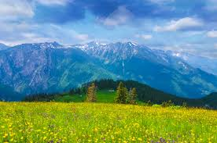

Why Visit Kosovo

Nature
Mountains, rivers, national parks, Rugova Canyon, and Brezovica ski resort.

Culture & History
Historic cities, historic places, ancient monuments, mosques, churches, and traditional customs.

Food & Traditions
Traditional cuisine, hospitality, festivals, and local customs.

Historic Cities
Prizren, Peja, and Prishtina offer history, charm, and architecture.

Adventure
Hiking, skiing, biking, and outdoor adventures all year round.

Hospitality
Warm, friendly people who welcome visitors with open hearts.